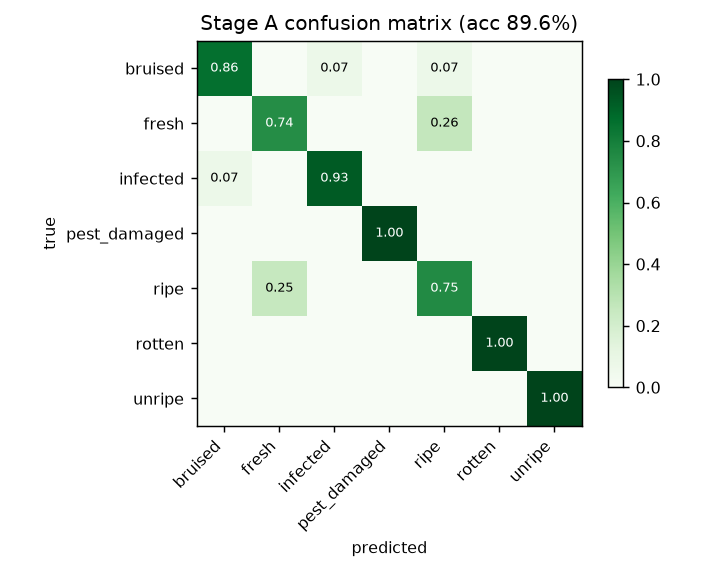
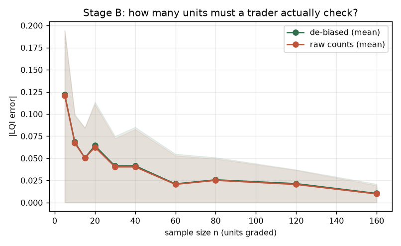
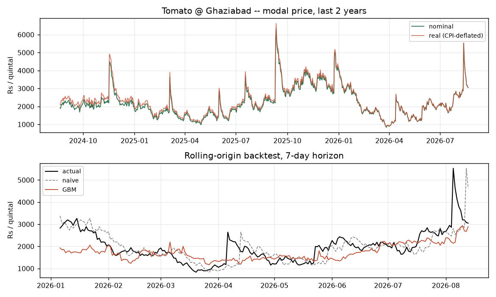
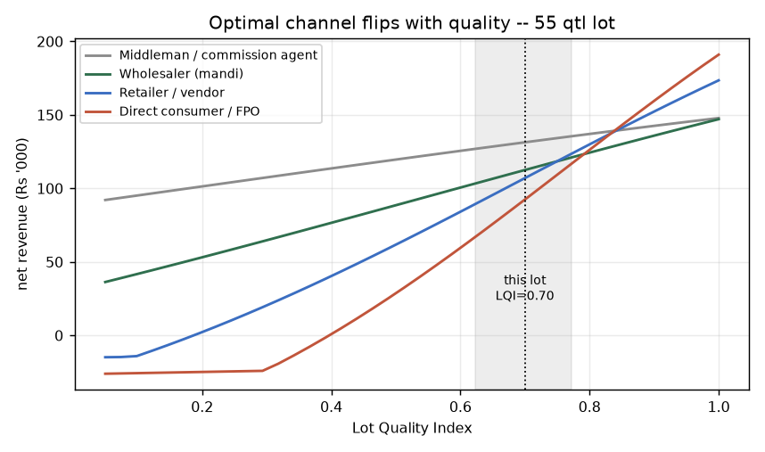

Held-out accuracy 89.6% across 7 condition classes. The confusion matrix is not just a score — Stage B inverts it to de-bias the sample counts.

| Condition | True share | Estimated | Weight wc |
|---|---|---|---|
| fresh | 30.0% | 23.9% | 1.00 |
| ripe | 28.0% | 20.9% | 0.95 |
| unripe | 12.0% | 19.4% | 0.70 |
| bruised | 14.0% | 16.9% | 0.55 |
| pest_damaged | 8.0% | 6.9% | 0.35 |
| infected | 5.0% | 6.1% | 0.15 |
| rotten | 3.0% | 5.8% | 0.00 |
Grade split → A 45% · B 36% · C 19%. The curve below answers the question a trader actually asks: how many units do I have to check? Error falls roughly as 1/√n, and flattens once n is large relative to the lot — that flattening point is your recommended sampling protocol.

| Model | MAE | RMSE | MAPE | MASE | Dir. acc |
|---|---|---|---|---|---|
| naive | 358.4 | 578.8 | 15.6% | 1.000 | — |
| snaive | 469.8 | 694.0 | 21.4% | 1.311 | 52% |
| ridge | 365.8 | 565.4 | 16.2% | 1.021 | 61% |
| gbm | 420.1 | 627.5 | 17.9% | 1.172 | 63% |
MASE < 1 means the model
beats the naive ŷ = yt baseline. If your real-data MASE lands
near or above 1, report it honestly — the project's contribution is quality-conditioned
routing, not beating the market.

| Channel | Gross ₹/qtl | Spoilage (qtl) | Commission | Logistics | Net | Net ₹/qtl |
|---|---|---|---|---|---|---|
| Middleman / commission agent | ₹2,543 | 1.8 | ₹2,704 | ₹1,100 | ₹131,368 | ₹2,389 |
| Wholesaler (mandi) | ₹2,565 | 3.6 | ₹9,227 | ₹9,900 | ₹112,519 | ₹2,046 |
| Retailer / vendor | ₹2,873 | 10.1 | ₹0 | ₹21,450 | ₹107,008 | ₹1,946 |
| Direct consumer / FPO | ₹3,179 | 15.8 | ₹0 | ₹31,900 | ₹92,416 | ₹1,680 |
Capacity-aware split. The top channel usually cannot absorb the whole lot, so allocate greedily by net rate:
| Channel | Allocated | Net |
|---|---|---|
| Middleman / commission agent | 55.0 qtl | ₹131,368 |
| Total | 55 qtl | ₹131,368 |
Splitting beats single-channel by ₹0 on this lot.

The crossings in that chart are the whole point of the system: below a quality threshold, the high-margin channels stop being optimal because spoilage over their longer time-to-sale eats the premium.
| Net if sold today | ₹118,380 |
| Net if held (expected) | ₹76,154 |
| Net if held (risk-adjusted) | ₹64,285 |
| Spoilage over the wait | 20.8 qtl |
| LQI after waiting | 0.581 |
| Decision | SELL NOW |
predict_proba.QUALITY_WEIGHTS and the channel table from grade-price
spreads and trader interviews. Do not ship the placeholders.